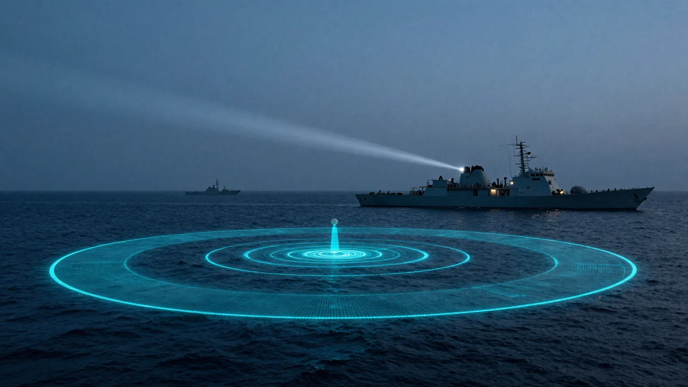

แนวคิดการป้องกันโครงสร้างพื้นฐานสำคัญทางทะเล Maritime Critical Infrastructure Protection Concepts
UDC คือ Maritime Critical Infrastructure ที่เผชิญภัยคุกคามแบบผสมผสานทั้ง Cyber–Physical Threats และสงครามพื้นท้องทะเล (Seabed Warfare) — การป้องกันจึงต้องบูรณาการสามแนวคิดเข้าด้วยกัน: หลักนิยมการป้องกันฐานทัพ/ท่าเรือของฝ่ายทหาร กลไกอำนวยการของ ศรชล. และการวิเคราะห์ปัจจัยเวลา–พื้นที่–กำลังรบตามศิลปะการยุทธ์ UDCs are Maritime Critical Infrastructure facing hybrid cyber-physical threats and seabed warfare tactics. Subsea protection requires integrating three pillars: military harbor defense/harbor control doctrines, THMECC inter-agency maritime coordination, and operational-art analyses of Time-Space-Force factors.
๒.๕.๑ — หลักนิยม Harbor Defense & Harbor Control (HDHC) 2.5.1 — Harbor Defense & Harbor Control (HDHC) Doctrines
🛡️ Harbor Defense — การป้องกันเชิงรุก Harbor Defense — Active Protection
จัดการป้องกันเป็นแนวลึกหลายชั้น (Defense in Depth + Layered Defense) ผสานเรือผิวน้ำ อากาศยาน และยานใต้น้ำไร้คนขับ ภายใต้เครือข่าย NCW — ภัยคุกคามต้องถูกตรวจพบและสกัดตั้งแต่ชั้นนอกสุด ก่อนเข้าถึงทรัพย์สินที่คุ้มครอง Establishes Defense in depth / Layered Defense, coordinating surface combatants, aircraft, and unmanned underwater assets under a NCW network. Threats must be detected and intercepted at the outer layers before reaching protected assets.
🚦 Harbor Control — การควบคุมเชิงระเบียบ Harbor Control — Procedural Control
ควบคุมการเข้า–ออกพื้นที่ด้วยมาตรการ Routing · Movement Control · Reporting · Convoy บนฐานข้อมูล MDA ที่ต่อเนื่อง — ยกระดับจากภาวะปกติสู่ภาวะสงครามได้โดยไม่ต้องรื้อโครงสร้างใหม่ Controls area transit through measures such as Routing, Movement Control, Reporting, and Convoys driven by continuous MDA data, permitting seamless escalation from peacetime to conflict operations.
"การนำหลักนิยม HDHC มาประยุกต์กับ UDC คือการยกระดับศูนย์ข้อมูลใต้น้ำให้ได้รับการคุ้มครอง เทียบเท่าฐานทัพเรือแห่งหนึ่ง — เพียงแต่ฐานทัพแห่งนี้จมอยู่ใต้ผิวน้ำ" "Applying HDHC doctrine to UDCs essentially elevates subsea data centers to receive protection comparable to a naval base—only this base lies completely submerged."

๒.๕.๒ — กลไกอำนวยการ: ศรชล. และเครือข่ายความมั่นคงทางทะเล 2.5.2 — Coordination Machinery: THMECC & Maritime Security Networks
ศูนย์อำนวยการรักษาผลประโยชน์ของชาติทางทะเล (ศรชล.) ตาม พ.ร.บ. ๒๕๖๒ มีฐานะเป็น"กลไกอำนวยการกลาง" ที่เชื่อม ๗ หน่วยงานหลักทางทะเลเข้าด้วยกัน — จุดแข็งที่งานวิจัยนำมาต่อยอดมี ๔ ประการ The Thai Maritime Enforcement Command Center (THMECC), established under the 2019 Act, serves as the "central coordination agency" linking 7 primary maritime agencies. This research leverages 4 core THMECC strengths:
- Data-Driven Operations — โครงการ One Marine Chart และ Big Data สู่ภาพสถานการณ์ร่วม (COP) ผืนเดียวของทะเลไทย Data-Driven Operations — One Marine Map and Big Data projects feeding a unified Common Operating Picture (COP) for Thai waters.
- เทคโนโลยี MDA — AIS / VMS / เรดาร์ชายฝั่ง / ดาวเทียม / UAV–UUV ผสาน AI วิเคราะห์แบบ Near Real-time ตรวจจับ Dark Vessels ที่ปิดสัญญาณ MDA Technologies — Integrating AIS, VMS, coastal radar, satellites, and UAVs/UUVs with AI tools for near real-time detection of non-transponding Dark Vessels.
- MECC Model — วงรอบบริหาร (ตามแนว PDCA): บูรณาการยุทธศาสตร์ทางทะเล → บังคับใช้และปฏิบัติ → ติดตามประเมินผล → ปรับปรุงต่อเนื่อง MECC Model — Policy lifecycle (PDCA cycle): Integrating maritime strategy → enforcement and execution → monitoring and assessment → continuous improvement.
- มิติไซเบอร์ — ประสาน สกมช. คุ้มครอง "เส้นทางคมนาคมดิจิทัล" (Digital SLOC) ซึ่ง UDC และสายเคเบิลใต้น้ำเป็นหัวใจ Cyber Dimension — Coordinating with NCSA to secure "Digital Lines of Communication" (Digital SLOCs), where UDCs and subsea cables form the backbone.

๒.๕.๓ — การวิเคราะห์ปัจจัยเวลา–พื้นที่–กำลังรบ (Time–Space–Force) 2.5.3 — Time–Space–Force Factors Analysis
ตามศิลปะการยุทธ์ (Operational Art) ผู้วางแผนต้องจัดความสัมพันธ์ของสามปัจจัย ให้เกื้อกูลกัน — งานวิจัยนี้ใช้กรอบดังกล่าวเป็นแกนสังเคราะห์แนวคิดทั้งบทเข้าเป็นโมเดลเดียว Under the principles of Operational Art, planners must coordinate the relationships among three critical factors to ensure mutual reinforcement. This research utilizes this framework as a central axis to synthesize all concepts into a unified active defense model.
| ปัจจัยทางการยุทธ์ Operational Factor | ทฤษฎี / แนวคิดที่เกี่ยวข้อง Related Concepts / Theories | การประยุกต์กับการป้องกัน UDC UDC Defense Application |
|---|---|---|
| พื้นที่ (Space) Space | การจัดระเบียบพื้นที่ทางทะเล (MSP) · TSS · เขตปลอดภัยตามกฎหมาย Marine Spatial Planning (MSP), TSS routing, legal exclusion zoning. | ใช้กฎหมายและผังพื้นที่จำกัดเสรีในการเคลื่อนที่ของภัยคุกคาม สถาปนา Battle Space Dominance รอบที่ตั้ง UDC Uses legislative acts and spatial allocation charts to restrict threat freedom of maneuver, establishing local battlespace dominance around UDC coordinates. |
| เวลา (Time) Time | MDA · เครือข่ายเซนเซอร์ · การแจ้งเตือนล่วงหน้า (Early Warning) MDA feeds, subsea sensor networks, Early Warning models. | ตรวจจับให้ไกลและเร็วที่สุดเพื่อซื้อเวลาตอบโต้ (Reaction Time) ให้กำลังที่อยู่ห่างออกไปเข้าถึงพื้นที่ทันการณ์ Detects anomalies at maximum ranges to maximize reaction time, allowing response forces dispatched from shore/stations to reach intercept coordinates in time. |
| กำลังรบ (Force) Force | NCW · การปฏิบัติการหลายมิติ (Multi-Domain) · Force Multiplier Network-Centric Warfare (NCW), Multi-Domain Operations, Force Multipliers. | ผนึกกำลังใต้น้ำ (USW Center + UUV) ผิวน้ำ–อากาศ (ทรภ.๑) และชายฝั่ง (สอ.รฝ.) ให้เครือข่ายทำหน้าที่ทวีกำลังแทนการเพิ่มจำนวนเรือ Integrates subsea assets (USW Center & UUVs), surface/air forces (1st Naval Area Command), and coastal units (ACDC) via network loops acting as a force multiplier rather than merely adding hulls. |
ใช้ พื้นที่ (กฎหมาย + MSP) จำกัดเสรีการเคลื่อนที่ของภัยคุกคาม → สร้าง เวลา (MDA + Early Warning) ให้ฝ่ายเรามากกว่า → เปิดโอกาสให้ กำลังรบ พหุมิติเข้าสกัดกั้นอย่างเฉียบขาด ณ จุดและเวลาที่ได้เปรียบ Leverage Space (Legislative acts + MSP) to restrict threat maneuverability → Generate superior reaction Time (MDA + Early Warning arrays) → Enable multi-dimensional Force packages to intercept decisively at optimal intercepts.